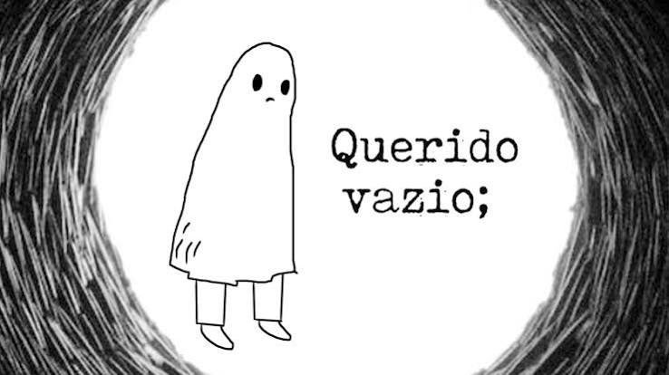

Há muito tempo procuro um motivo, uma forma de explicar o sentimento de se sentir vazio. Como, quando e por que ele nos atinge de uma maneira tão forte, principalmente quando tentamos, de todas as formas, fugir dele. E, na ausência de um motivo, a mente humana possui dificuldade de aceitar a questão em si.
Explorando o conceito, vazio é uma palavra proveniente do vocábulo latino vacīvus. O termo faz referência àquilo que carece de conteúdo. Existencial, por sua vez, é um adjetivo que diz respeito à ação de existir (estar, possuir vida, pertencer à realidade).
Em um mundo onde as pessoas estão conectadas, a maior parte do tempo, com laços frágeis e insignificantes através da internet, tem sido cada vez mais comum se sentir solitário mesmo estando rodeado por multidões. Isso porque, na atualidade, o mundo nas telas se tornou mais importante e vital do que um vínculo entre duas pessoas. Zygmunt Bauman chamou isso de “modernidade líquida”: laços frágeis, que se rompem facilmente e que, por isso mesmo, geram insegurança emocional.
A sociedade atual estimula relações rápidas, descartáveis e utilitárias.
O vazio traz junto de si um silêncio ensurdecedor. Por vinte anos, me sentei cara a cara com esse silêncio e nunca entendi a razão do meu ódio pelo mesmo. Afinal de contas, todos amavam o silêncio, a calmaria que este carrega. Mas estar sempre em sua companhia acaba se tornando um fardo, ao invés de um privilégio; tornava-me um estrangeiro dentro da minha própria cabeça. A quietude me assustava, pois gritava a verdade, nua e crua.
Aprendi que, para acalmar essa sensação, não é necessária a completude. Se você completa o vazio, ele deixa de ser o que é, e isso não o torna inexistente, mas sim obsoleto. Esse sentimento inquietante precisa de uma resposta, atenção. Grande parte das vezes, uma simples resposta já é suficiente para que o vazio se sinta satisfeito com a questão. Contudo, há situações em que ele precisa de uma reflexão maior, uma atenção mais cautelosa, focada especificamente nele. Afinal, ele não deve ser ignorado; ele é a parte de mim que se importa.
Me inspirei nesse video, caso o senhor tenha interesse em assistir.